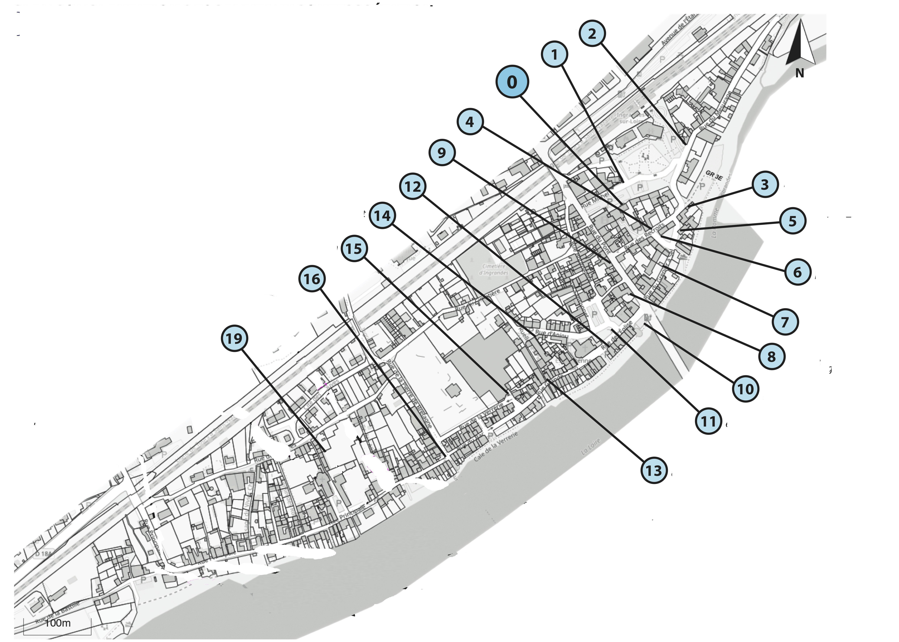

Retour à la page d'accueil
Commune d'Ingrandes-Le Fresne / Loire
Association Tourisme Culture et Patrimoine
Parcours historique et patrimonial

Bienvenue
Le champ de foire
Les voies d'accès
Le mesurage
Logis du Prévôt/Prison
La maison Tourmeau
La place des Halles
La maison notariale
La Gabelle
La maison J.H. Renou
Le Pont
L'église d'Ingrandes
La douane
Les auberges
La Boule de Fort
La Verrerie Grandin
La Pierre de Bretagne
Walsh
 Retour à la page d'accueil
Retour à la page d'accueil